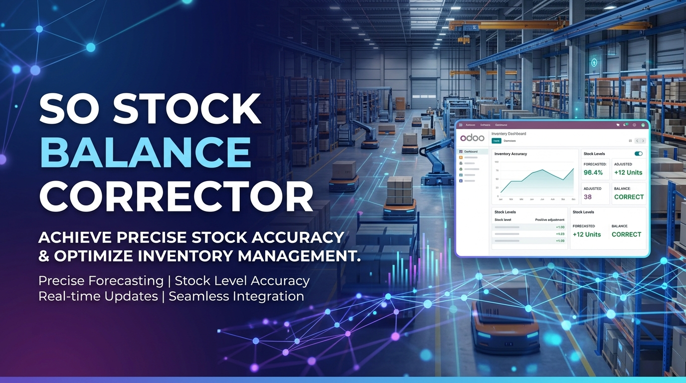

Automatic "Phantom" Picking Generation on Quantities Decreases

When a Sales Order line has a confirmed delivery that has been generated or printed, changing your mind and decreasing the order line quantity natively triggers a bug. Instead of modifying the current workflow cleanly, Odoo generates a separate "phantom" return or incoming picking record, which falsely inflates the item's forecasted availability.
Business Impact: High operational friction. Inventory planners look at forecasting dashboards and see stock arriving that does not exist. This leads to double-selling errors, dead stock on procurement, and corrupted warehouse workflows.
Affected Versions: Odoo 18.0 and 19.0.
This module creates a logistics control layer that sits over sale_stock. It recodes the transactional quantity alteration hooks. If a line is decreased before actual physical validation occurs, it suppresses the automatic generation of balancing transfers and instead cleanly adjusts the existing picking document to reflect the correct real-world allocations.
By default, when you decrease the quantity of a confirmed Sales Order line, the internal signal handler assumes the stock was already processed or needs a balancing transfer. This leads to "phantom" incoming stock on forecasting reports. Our module fixes this by adjusting the original pending picking instead.
No, this module cleanly intercepts the _action_launch_stock_rule in sale.order.line before any conflicting stock rules are triggered, ensuring high compatibility with custom warehouse routing and standard Odoo apps.
If physical validation has already occurred (picking state is 'Done'), a return is necessary because the goods have left the facility. Our module only intercepts decreases made before the final physical validation, optimizing the pending picking records seamlessly.
Developed with ❤️ by Odoocrafts Innovations